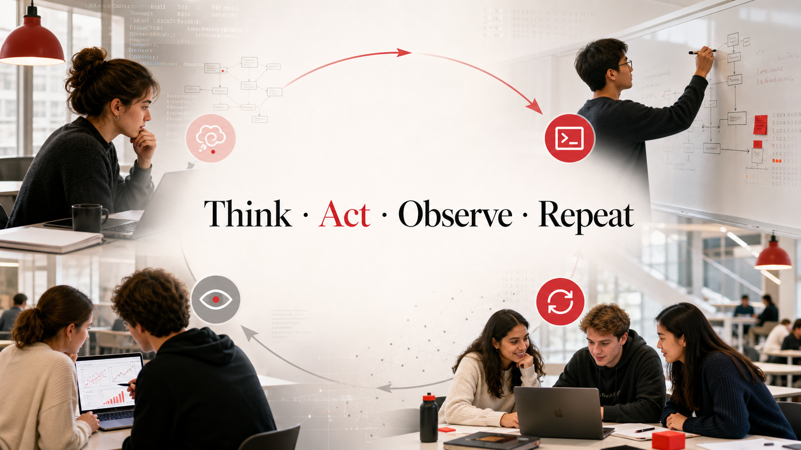

Core event docs
Program, participant instructions, and the registration workbook establish date, rooms, schedule, tool setup, audience size, and participant problem signals.
2 PDFs42 responses~45 audience
A one-day faculty agentathon at KTH: morning grounding, two hands-on build sessions, then live demos. The useful mental model is not "watch a model be clever"; it is "put a scoped agent into real work and verify what it claims."

The workspace is a mixed event kit: official schedule PDFs, track-specific skeletons, real grading examples, a research-code mini-repo, a Track C web page, and a 42-row registration response workbook.
Program, participant instructions, and the registration workbook establish date, rooms, schedule, tool setup, audience size, and participant problem signals.
Teaching materials include grading tasks, exam and homework PDFs, human-graded reference files, and a tutoring-agent skill called MiLLy.
The research/HPC track is the most scaffolded: Markdown guides, role templates, Python tests, SLURM examples, logs, sample data, and demo report templates.
The local README points to the published Track C page: open exploration for KTH systems, knowledge work, lab automation, documents, and participant-defined projects.
The timetable is structured to get people out of passive listening quickly: less than one hour of plenary, then scoped sub-team work, a short cross-track update, and live demos.
Each track has a different promise. Track A turns course material into teaching support, Track B puts coding agents under research-computing constraints, and Track C absorbs the many real KTH workflows that do not fit the first two.
The workbook has 42 registration responses but no explicit track-choice column. I classified each free-text problem statement by the event's track definitions, then scaled the signal to the stated audience size of about 45.
Prediction: Track A 10 people, Track B 14 people, Track C 21 people. The uncertainty is highest for broad research/teaching responses and blank entries; the strongest signal is that many people bring administrative, knowledge, lab, or general workflow questions that naturally land in Track C.
Participants are likely to judge the day by whether they leave with a concrete agent pattern they can reuse, not by how comprehensive the theory is.
The event is framed as three tracks, but the registration signal points to one shared need: faculty want agents that tame messy daily workflows, so Track C is likely to become the largest and most heterogeneous room.
Local files and the Track C page linked from the workspace README.